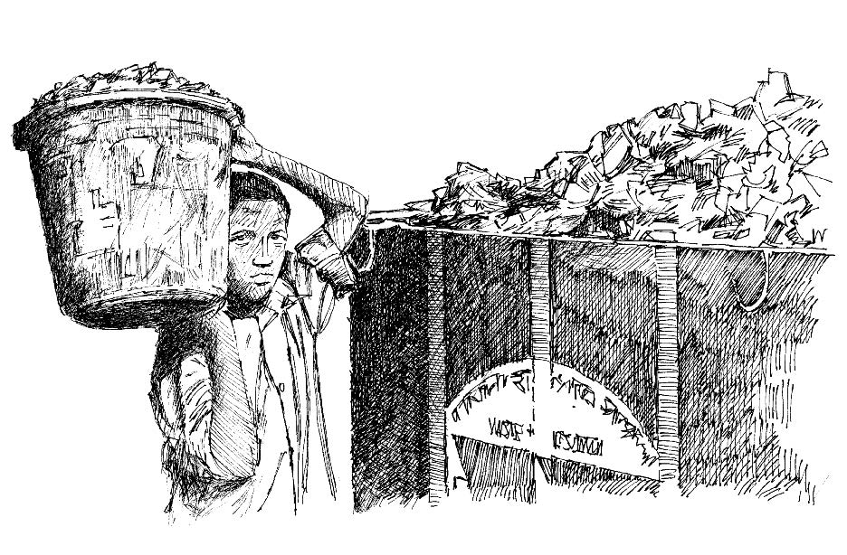

Overview
- Rubbish can attract rodents and create a breeding area for flies and mosquitoes.
- Animal faeces near houses and in the village increase the number of flies and insects that carry germs, cause diseases, and contaminate water sources.
- Animal faeces around houses and in the village attract and multiply the flies and insects that carry germs, cause diseases and contaminate water sources.
- Mosquitoes (which carry malaria , dengue fever , chikungunya , Zika and yellow fever ) breed in standing water.
- Rubbish should be burned or buried.
- Vegetation should be cleared from river banks and ponds near the village.
- The area around water sources (pumps, wells) should be kept clean.

Tell community members how important it is to keep their community clean. Organize regular clean-up campaigns. Include houses and latrines, etc.
What you can do
- Work with traditional and political leaders, the village health committee and other community partners to decide what needs to be cleaned up and how to go about it.
- Help to organize activities on agreed “clean-up” days.
- Ask community leaders to organize volunteer groups for each clean-up initiative.
- Organize special clean-up days in which all members of the community participate (twice a year or more often if possible).
- Organize a community initiative to plan and create a central garbage disposal area.
Motivate and support the community to work together to:
- Keep the community free of animal faeces.
- Keep the community free of puddles and other mosquito breeding sites.
- Keep the community free of rubbish and garbage (by burning or burying it).
- Clean the areas around water sources (such as pumps and wells).
- Create and maintain water soak pits around water sources.

Make sure to dispose of waste properly. This will help to protect the community from germs.